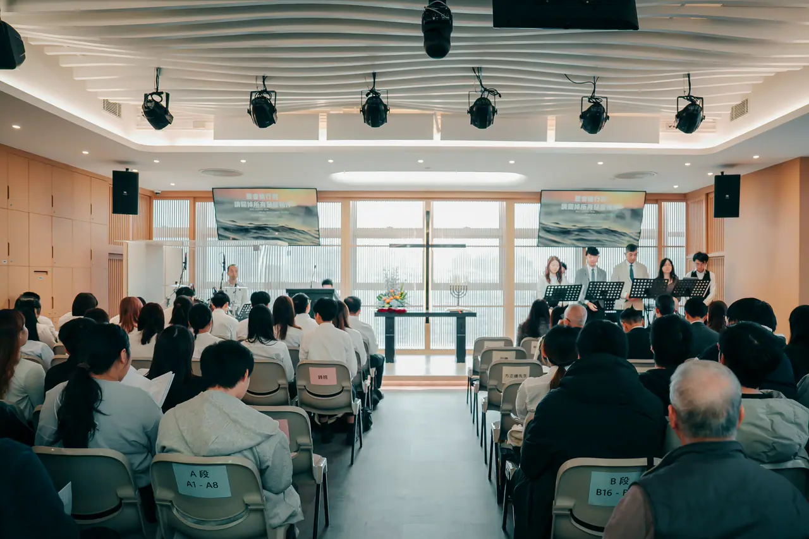

週六及週日崇拜
週日 09:30
早堂崇拜
週日 11:15
午堂崇拜
週六 17:30
青少年崇拜
中學及大專學生

在每個星期的聚會中相聚，在詩歌與真道中同行成長。
中學及大專學生
為教會、肢體與社區同心守望，在禱告中彼此扶持。
聚會地點：九龍觀塘成業街 10 號電訊一代廣場 23 樓 A 室
本週代禱事項 →第四季合堂崇拜於教會禮堂及副堂舉行；10月4日早堂及10月3日（週六）青少年崇拜取消。
香港五旬節聖潔會禱告禁食日，主題為「感動．敢動」，集體祈禱會地點為教會禮堂。歡迎弟兄姊妹同心禱告。
聯合崇拜日期為2027年3月26日及3月28日。事奉團隊報名於2026年10月11日截止；有意參與的弟兄姊妹，請向教會查詢報名詳情。
不用擔心不熟悉教會，歡迎帶著你的問題來。
沒有特別要求，穿您覺得舒適的衣服就好。請避免衣著暴露，也不適宜穿著拖鞋。
不需要。奉獻是在明白奉獻意義的情況下自願的回應，並非必須。
約1小時30分鐘，包括詩歌敬拜和講道。
歡迎，我們週日崇拜設有直播間，方便攜同孩子參與。若您的孩子已踏入青少年階段，我們也設有青少年崇拜（週六17:30，適合中學及大專學生）。